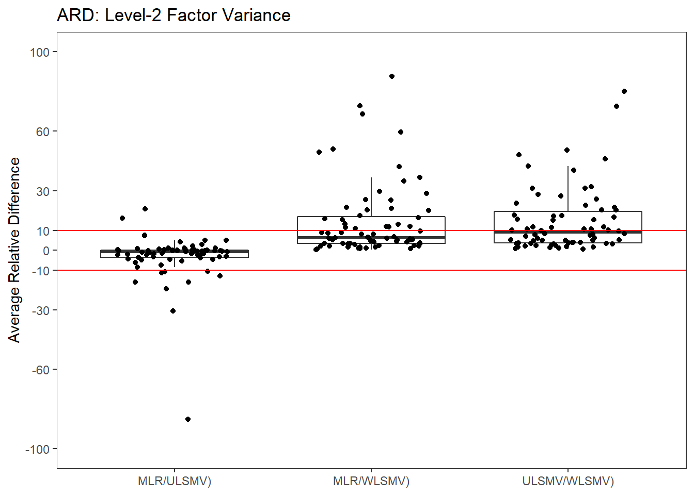
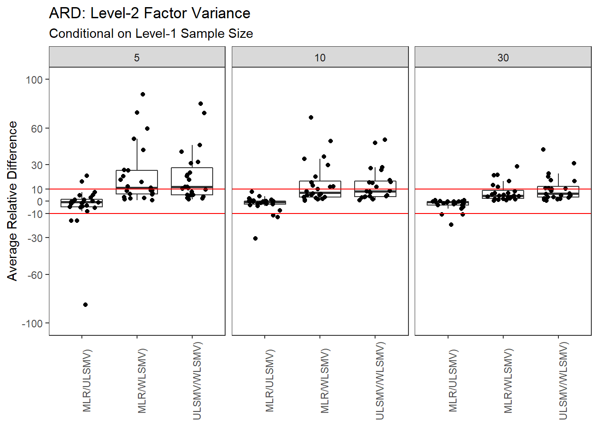
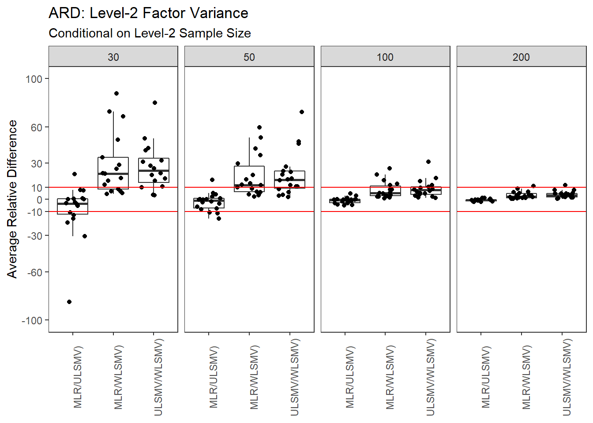
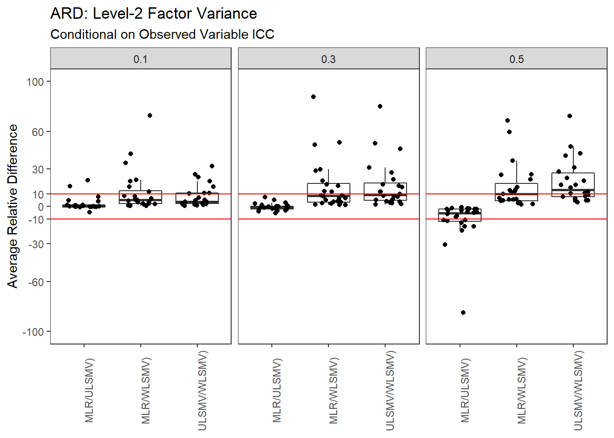
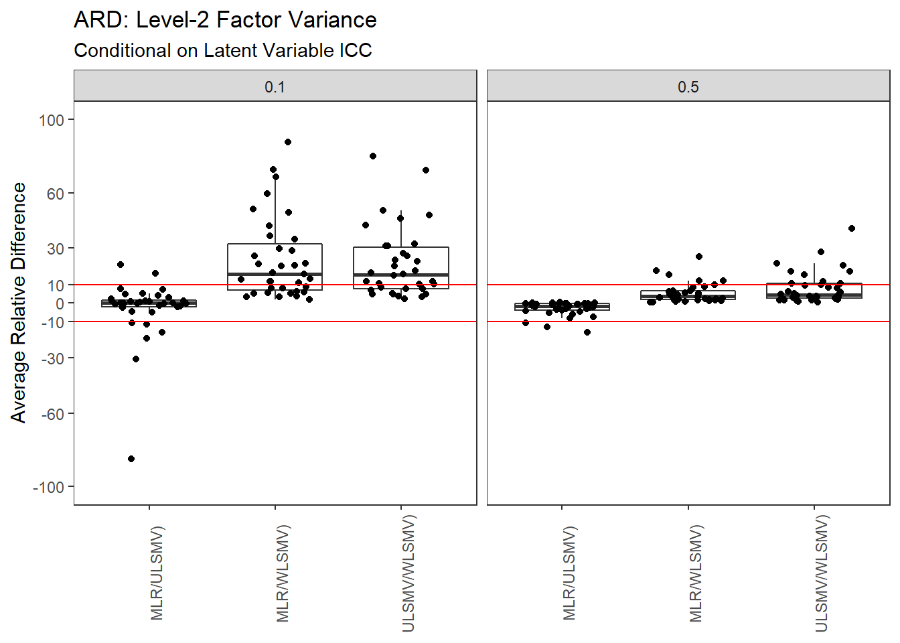
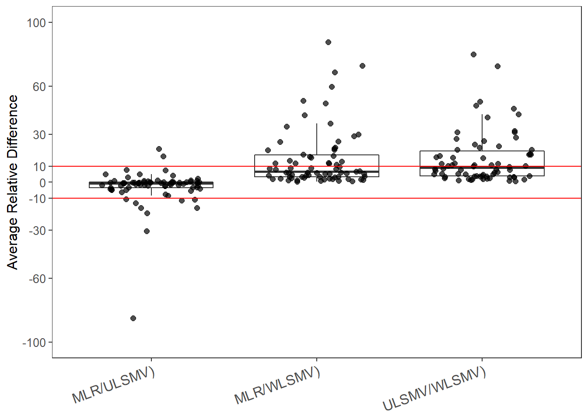

Last updated: 2020-06-10
Checks: 6 1
Knit directory: mcfa-para-est/
This reproducible R Markdown analysis was created with workflowr (version 1.6.2). The Checks tab describes the reproducibility checks that were applied when the results were created. The Past versions tab lists the development history.
The R Markdown is untracked by Git. To know which version of the R Markdown file created these results, you’ll want to first commit it to the Git repo. If you’re still working on the analysis, you can ignore this warning. When you’re finished, you can run wflow_publish to commit the R Markdown file and build the HTML.
Great job! The global environment was empty. Objects defined in the global environment can affect the analysis in your R Markdown file in unknown ways. For reproduciblity it’s best to always run the code in an empty environment.
The command set.seed(20190614) was run prior to running the code in the R Markdown file. Setting a seed ensures that any results that rely on randomness, e.g. subsampling or permutations, are reproducible.
Great job! Recording the operating system, R version, and package versions is critical for reproducibility.
Nice! There were no cached chunks for this analysis, so you can be confident that you successfully produced the results during this run.
Great job! Using relative paths to the files within your workflowr project makes it easier to run your code on other machines.
Great! You are using Git for version control. Tracking code development and connecting the code version to the results is critical for reproducibility.
The results in this page were generated with repository version eecb366. See the Past versions tab to see a history of the changes made to the R Markdown and HTML files.
Note that you need to be careful to ensure that all relevant files for the analysis have been committed to Git prior to generating the results (you can use wflow_publish or wflow_git_commit). workflowr only checks the R Markdown file, but you know if there are other scripts or data files that it depends on. Below is the status of the Git repository when the results were generated:
Ignored files:
Ignored: .Rhistory
Ignored: .Rproj.user/
Ignored: data/compiled_para_results.txt
Ignored: data/results_bias_est.csv
Ignored: data/results_bias_se.csv
Ignored: fig/
Ignored: manuscript/
Ignored: output/fact-cov-converge-largeN.pdf
Ignored: output/fact-cov-converge-medN.pdf
Ignored: output/fact-cov-converge-smallN.pdf
Ignored: output/loading-converge-largeN.pdf
Ignored: output/loading-converge-medN.pdf
Ignored: output/loading-converge-smallN.pdf
Ignored: references/
Ignored: sera-presentation/
Untracked files:
Untracked: analysis/ml-cfa-parameter-anova-estimates.Rmd
Untracked: analysis/ml-cfa-parameter-anova-relative-bias.Rmd
Untracked: analysis/ml-cfa-parameter-bias-latent-ICC.Rmd
Untracked: analysis/ml-cfa-parameter-bias-observed-ICC.Rmd
Untracked: analysis/ml-cfa-parameter-convergence-ARD-L1-factor-covariance.Rmd
Untracked: analysis/ml-cfa-parameter-convergence-ARD-L2-factor-covariance.Rmd
Untracked: analysis/ml-cfa-parameter-convergence-ARD-L2-factor-variance.Rmd
Untracked: analysis/ml-cfa-parameter-convergence-ARD-L2-residual-variance.Rmd
Untracked: analysis/ml-cfa-parameter-convergence-ARD-factor-loadings.Rmd
Untracked: analysis/ml-cfa-parameter-convergence-ARD-latent-ICC.Rmd
Untracked: analysis/ml-cfa-parameter-convergence-ARD-observed-ICC.Rmd
Untracked: analysis/ml-cfa-parameter-convergence-correlation-pubfigure.Rmd
Untracked: analysis/ml-cfa-parameter-convergence-trace-plots-factor-loadings.Rmd
Untracked: analysis/ml-cfa-standard-error-anova-logSE.Rmd
Untracked: analysis/ml-cfa-standard-error-anova-relative-bias.Rmd
Untracked: analysis/ml-cfa-standard-error-bias-factor-loadings.Rmd
Untracked: analysis/ml-cfa-standard-error-bias-level1-factor-covariances.Rmd
Untracked: analysis/ml-cfa-standard-error-bias-level2-factor-covariances.Rmd
Untracked: analysis/ml-cfa-standard-error-bias-level2-factor-variances.Rmd
Untracked: analysis/ml-cfa-standard-error-bias-level2-residual-variances.Rmd
Untracked: analysis/ml-cfa-standard-error-bias-overview.Rmd
Untracked: code/r_functions.R
Untracked: renv.lock
Untracked: renv/
Unstaged changes:
Modified: .gitignore
Modified: analysis/index.Rmd
Modified: analysis/ml-cfa-convergence-summary.Rmd
Modified: analysis/ml-cfa-parameter-convergence-correlation-factor-loadings.Rmd
Modified: code/get_data.R
Modified: code/load_packages.R
Note that any generated files, e.g. HTML, png, CSS, etc., are not included in this status report because it is ok for generated content to have uncommitted changes.
There are no past versions. Publish this analysis with wflow_publish() to start tracking its development.
The purpose of this page is the identify the degree of separation between estimates of parameters between estimation methods.
rm(list=ls())
source(paste0(getwd(),"/code/load_packages.R"))
source(paste0(getwd(),"/code/get_data.R"))
source(paste0(getwd(),"/code/r_functions.R"))
# general options
theme_set(theme_bw())
options(digits=3)
##Chunk iptions
knitr::opts_chunk$set(out.width="225%")# set up vectors of variable names
pvec <- c(paste0('lambda1',1:6), paste0('lambda2',6:10), 'psiW12','psiB1', 'psiB2', 'psiB12', paste0('thetaB',1:10), 'icc_lv1_est', 'icc_lv2_est', paste0('icc_ov',1:10,'_est'))
# stored "true" values of parameters by each condition
ptvec <- c(rep('lambdaT',11), 'psiW12T', 'psiB1T', 'psiB2T', 'psiB12T', rep("thetaBT", 10), rep('icc_lv',2), rep('icc_ov',10))
# take out non-converged/inadmissible cases
sim_results <- filter(sim_results, Converge==1, Admissible==1)
# Set conditions levels as categorical values
sim_results <- sim_results %>%
mutate(N1 = factor(N1, c("5", "10", "30")),
N2 = factor(N2, c("30", "50", "100", "200")),
ICC_OV = factor(ICC_OV, c("0.1","0.3", "0.5")),
ICC_LV = factor(ICC_LV, c("0.1", "0.5")))
# convert to long format
long_res1 <- sim_results[,c("Condition", "Replication", "N1", "N2", "ICC_OV", "ICC_LV", "Estimator", pvec)] %>%
pivot_longer(
cols = all_of(pvec),
names_to = "Parameter",
values_to = "Estimate"
)
long_res2 <- tibble(sim_results[,c("Condition", "Replication", "N1", "N2", "ICC_OV", "ICC_LV", "Estimator", ptvec)], .name_repair="universal")
ptvec <- colnames(long_res2)[8:44]
long_res2 <- long_res2 %>%
pivot_longer(
cols = all_of(ptvec),
names_to = "ParameterT",
values_to = "Truth"
)
long_results <- long_res1
long_results$ParameterT <- long_res2$ParameterT
long_results$Truth <- long_res2$Truth
# Now, make "wider"
wide_res <- long_results %>%
pivot_wider(
names_from = "Estimator",
values_from = "Estimate"
)
# Subset to just level-2 factor variances
wide_res <- filter(wide_res, Parameter %in% c("psiB1", "psiB2"))wide_res <- wide_res %>%
mutate(
MLR_ULSMV = ((MLR - ULSMV))/Truth*100,
MLR_WLSMV = ((MLR - WLSMV))/Truth*100,
ULSMV_WLSMV = ((ULSMV - WLSMV))/Truth*100
)
long_results <- wide_res %>%
pivot_longer(
cols= all_of(c("MLR_ULSMV", "MLR_WLSMV", "ULSMV_WLSMV")),
names_to = "Comparison",
values_to = "ARD"
)
ard.est <- long_results %>%
group_by(Condition, N1, N2, ICC_OV, ICC_LV, Comparison) %>%
summarise(
ARD = mean(ARD, na.rm=T)
)
ard.est$Comparison <- factor(ard.est$Comparison,
levels=c("MLR_ULSMV", "MLR_WLSMV", "ULSMV_WLSMV"),
labels=c("MLR/ULSMV)",
"MLR/WLSMV)",
"ULSMV/WLSMV)"),
ordered=T)p <- ggplot(ard.est, aes(x=Comparison, y=ARD)) +
geom_boxplot(outlier.shape = NA) +
geom_jitter(width=0.3) +
geom_hline(yintercept = 10, color="red")+
geom_hline(yintercept = -10, color="red")+
scale_y_continuous(limits=c(-100, 100), breaks=c(-100, -60, -30, -10, 0, 10, 30, 60, 100))+
labs(y="Average Relative Difference",
x=NULL,
title="ARD: Level-2 Factor Variance")+
theme_bw()+
theme(panel.grid = element_blank())
pWarning: Removed 3 rows containing non-finite values (stat_boxplot).Warning: Removed 3 rows containing missing values (geom_point).
p <- ggplot(ard.est, aes(x=Comparison, y=ARD)) +
geom_boxplot(outlier.shape = NA) +
geom_jitter(width=0.3) +
geom_hline(yintercept = 10, color="red")+
geom_hline(yintercept = -10, color="red")+
scale_y_continuous(limits=c(-100, 100), breaks=c(-100, -60, -30, -10, 0, 10, 30, 60, 100))+
labs(y="Average Relative Difference",
x=NULL,
title="ARD: Level-2 Factor Variance",
subtitle = "Conditional on Level-1 Sample Size")+
#scale_color_manual(name="% Admissible", values=cols)+
facet_wrap(.~N1)+
theme_bw()+
theme(panel.grid = element_blank(),
axis.text.x = element_text(angle=90))
pWarning: Removed 3 rows containing non-finite values (stat_boxplot).Warning: Removed 3 rows containing missing values (geom_point).
p <- ggplot(ard.est, aes(x=Comparison, y=ARD)) +
geom_boxplot(outlier.shape = NA) +
geom_jitter(width=0.3) +
geom_hline(yintercept = 10, color="red")+
geom_hline(yintercept = -10, color="red")+
scale_y_continuous(limits=c(-100, 100), breaks=c(-100, -60, -30, -10, 0, 10, 30, 60, 100))+
labs(y="Average Relative Difference",
x=NULL,
title="ARD: Level-2 Factor Variance",
subtitle = "Conditional on Level-2 Sample Size")+
#scale_color_manual(name="% Admissible", values=cols)+
facet_wrap(.~N2, nrow=1)+
theme_bw()+
theme(panel.grid = element_blank(),
axis.text.x = element_text(angle=90))
pWarning: Removed 3 rows containing non-finite values (stat_boxplot).Warning: Removed 3 rows containing missing values (geom_point).
p <- ggplot(ard.est, aes(x=Comparison, y=ARD)) +
geom_boxplot(outlier.shape = NA) +
geom_jitter(width=0.3) +
geom_hline(yintercept = 10, color="red")+
geom_hline(yintercept = -10, color="red")+
scale_y_continuous(limits=c(-100, 100), breaks=c(-100, -60, -30, -10, 0, 10, 30, 60, 100))+
labs(y="Average Relative Difference",
x=NULL,
title="ARD: Level-2 Factor Variance",
subtitle = "Conditional on Observed Variable ICC")+
#scale_color_manual(name="% Admissible", values=cols)+
facet_wrap(.~ICC_OV)+
theme_bw()+
theme(panel.grid = element_blank(),
axis.text.x = element_text(angle=90))
pWarning: Removed 3 rows containing non-finite values (stat_boxplot).Warning: Removed 3 rows containing missing values (geom_point).
p <- ggplot(ard.est, aes(x=Comparison, y=ARD)) +
geom_boxplot(outlier.shape = NA) +
geom_jitter(width=0.3) +
geom_hline(yintercept = 10, color="red")+
geom_hline(yintercept = -10, color="red")+
scale_y_continuous(limits=c(-100, 100), breaks=c(-100, -60, -30, -10, 0, 10, 30, 60, 100))+
labs(y="Average Relative Difference",
x=NULL,
title="ARD: Level-2 Factor Variance",
subtitle = "Conditional on Latent Variable ICC")+
#scale_color_manual(name="% Admissible", values=cols)+
facet_wrap(.~ICC_LV)+
theme_bw()+
theme(panel.grid = element_blank(),
axis.text.x = element_text(angle=90))
pWarning: Removed 3 rows containing non-finite values (stat_boxplot).Warning: Removed 3 rows containing missing values (geom_point).
p <- ggplot(ard.est, aes(x=Comparison, y=ARD)) +
geom_boxplot(outlier.shape = NA) +
geom_jitter(width=0.3, size=2, alpha=0.7) +
geom_hline(yintercept = 10, color="red")+
geom_hline(yintercept = -10, color="red")+
scale_y_continuous(limits=c(-100, 100), breaks=c(-100, -60, -30, -10, 0, 10, 30, 60, 100))+
labs(y="Average Relative Difference",
x=NULL)+
theme_bw()+
theme(panel.grid = element_blank(),
legend.position = c(0.5,0.25),
legend.text = element_text(size=12),
legend.title = element_text(size=12),
axis.title.y = element_text(size=12),
axis.text.y = element_text(size=10),
axis.text.x = element_text(angle=20, hjust=1,
vjust = 1, size=12))
pWarning: Removed 3 rows containing non-finite values (stat_boxplot).Warning: Removed 3 rows containing missing values (geom_point).
#ggsave("fig/estimate_correlation_factor_loading.pdf",p, units="in", height=3.5, width=5)sessionInfo()R version 3.6.3 (2020-02-29)
Platform: x86_64-w64-mingw32/x64 (64-bit)
Running under: Windows 10 x64 (build 18362)
Matrix products: default
locale:
[1] LC_COLLATE=English_United States.1252
[2] LC_CTYPE=English_United States.1252
[3] LC_MONETARY=English_United States.1252
[4] LC_NUMERIC=C
[5] LC_TIME=English_United States.1252
attached base packages:
[1] stats graphics grDevices utils datasets methods base
other attached packages:
[1] xtable_1.8-4 kableExtra_1.1.0 cowplot_1.0.0
[4] MplusAutomation_0.7-3 data.table_1.12.8 patchwork_1.0.0
[7] forcats_0.5.0 stringr_1.4.0 dplyr_0.8.5
[10] purrr_0.3.4 readr_1.3.1 tidyr_1.1.0
[13] tibble_3.0.1 ggplot2_3.3.0 tidyverse_1.3.0
[16] workflowr_1.6.2
loaded via a namespace (and not attached):
[1] httr_1.4.1 jsonlite_1.6.1 viridisLite_0.3.0 gsubfn_0.7
[5] modelr_0.1.8 assertthat_0.2.1 pander_0.6.3 blob_1.2.1
[9] cellranger_1.1.0 yaml_2.2.1 pillar_1.4.4 backports_1.1.7
[13] lattice_0.20-38 glue_1.4.1 digest_0.6.25 promises_1.1.0
[17] rvest_0.3.5 colorspace_1.4-1 htmltools_0.4.0 httpuv_1.5.2
[21] plyr_1.8.6 pkgconfig_2.0.3 broom_0.5.6 haven_2.3.0
[25] scales_1.1.1 webshot_0.5.2 later_1.0.0 git2r_0.27.1
[29] generics_0.0.2 farver_2.0.3 ellipsis_0.3.1 withr_2.2.0
[33] cli_2.0.2 proto_1.0.0 magrittr_1.5 crayon_1.3.4
[37] readxl_1.3.1 evaluate_0.14 fs_1.4.1 fansi_0.4.1
[41] nlme_3.1-144 xml2_1.3.2 tools_3.6.3 hms_0.5.3
[45] lifecycle_0.2.0 munsell_0.5.0 reprex_0.3.0 compiler_3.6.3
[49] rlang_0.4.6 grid_3.6.3 rstudioapi_0.11 texreg_1.36.23
[53] rmarkdown_2.1 boot_1.3-24 gtable_0.3.0 DBI_1.1.0
[57] R6_2.4.1 lubridate_1.7.8 knitr_1.28 rprojroot_1.3-2
[61] stringi_1.4.6 parallel_3.6.3 Rcpp_1.0.4.6 vctrs_0.3.0
[65] dbplyr_1.4.4 tidyselect_1.1.0 xfun_0.14 coda_0.19-3
sessionInfo()R version 3.6.3 (2020-02-29)
Platform: x86_64-w64-mingw32/x64 (64-bit)
Running under: Windows 10 x64 (build 18362)
Matrix products: default
locale:
[1] LC_COLLATE=English_United States.1252
[2] LC_CTYPE=English_United States.1252
[3] LC_MONETARY=English_United States.1252
[4] LC_NUMERIC=C
[5] LC_TIME=English_United States.1252
attached base packages:
[1] stats graphics grDevices utils datasets methods base
other attached packages:
[1] xtable_1.8-4 kableExtra_1.1.0 cowplot_1.0.0
[4] MplusAutomation_0.7-3 data.table_1.12.8 patchwork_1.0.0
[7] forcats_0.5.0 stringr_1.4.0 dplyr_0.8.5
[10] purrr_0.3.4 readr_1.3.1 tidyr_1.1.0
[13] tibble_3.0.1 ggplot2_3.3.0 tidyverse_1.3.0
[16] workflowr_1.6.2
loaded via a namespace (and not attached):
[1] httr_1.4.1 jsonlite_1.6.1 viridisLite_0.3.0 gsubfn_0.7
[5] modelr_0.1.8 assertthat_0.2.1 pander_0.6.3 blob_1.2.1
[9] cellranger_1.1.0 yaml_2.2.1 pillar_1.4.4 backports_1.1.7
[13] lattice_0.20-38 glue_1.4.1 digest_0.6.25 promises_1.1.0
[17] rvest_0.3.5 colorspace_1.4-1 htmltools_0.4.0 httpuv_1.5.2
[21] plyr_1.8.6 pkgconfig_2.0.3 broom_0.5.6 haven_2.3.0
[25] scales_1.1.1 webshot_0.5.2 later_1.0.0 git2r_0.27.1
[29] generics_0.0.2 farver_2.0.3 ellipsis_0.3.1 withr_2.2.0
[33] cli_2.0.2 proto_1.0.0 magrittr_1.5 crayon_1.3.4
[37] readxl_1.3.1 evaluate_0.14 fs_1.4.1 fansi_0.4.1
[41] nlme_3.1-144 xml2_1.3.2 tools_3.6.3 hms_0.5.3
[45] lifecycle_0.2.0 munsell_0.5.0 reprex_0.3.0 compiler_3.6.3
[49] rlang_0.4.6 grid_3.6.3 rstudioapi_0.11 texreg_1.36.23
[53] rmarkdown_2.1 boot_1.3-24 gtable_0.3.0 DBI_1.1.0
[57] R6_2.4.1 lubridate_1.7.8 knitr_1.28 rprojroot_1.3-2
[61] stringi_1.4.6 parallel_3.6.3 Rcpp_1.0.4.6 vctrs_0.3.0
[65] dbplyr_1.4.4 tidyselect_1.1.0 xfun_0.14 coda_0.19-3